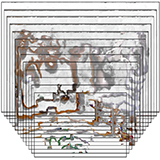
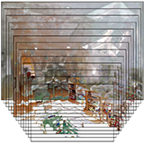

|
Michael Wehrli I'm a first year PhD Candidate at the Center for medical Image Analysis & Navigation (CIAN) at the University of Basel. My PhD is supervised by Philippe Claude Cattin and Carol-Claudius Hasler. I hold a Bachelor's and Master's degree in Mechanical Engineering from ETH Zurich, completed in January 2022, with a focus on computer vision and biomedical engineering. Before starting my PhD, I gained professional experience in data analytics and AI consulting at BearingPoint. Email / LinkedIn / Google Scholar / Github |

|
ResearchI'm interested in deep learning, generative AI, image processing and how to leverage Augmented Reality within surgery. My goal is to contribute to meaningful innovations at the intersection of technology and healthcare. Leveraging data-driven solutions in advancing biomedical technologies. |

|
CAT4D: Create Anything in 4D with Multi-View Video Diffusion Models
Rundi Wu, Ruiqi Gao, Ben Poole, Alex Trevithick, Changxi Zheng, Jonathan T. Barron, Aleksander Holynski arXiv, 2024 project page / arXiv An approach for turning a video into a 4D radiance field that can be rendered in real-time. When combined with a text-to-video model, this enables text-to-4D. |
|
  |
Pushing the Boundaries of View Extrapolation with Multiplane Images
Pratul P. Srinivasan, Richard Tucker, Jonathan T. Barron, Ravi Ramamoorthi, Ren Ng, Noah Snavely CVPR, 2019 (Oral Presentation, Best Paper Award Finalist) supplement / video / bibtex View extrapolation with multiplane images works better if you reason about disocclusions and disparity sampling frequencies. |
Open Master Theses |
|
Template adapted from this website. |